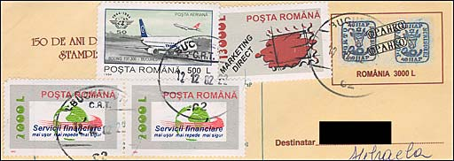
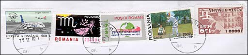
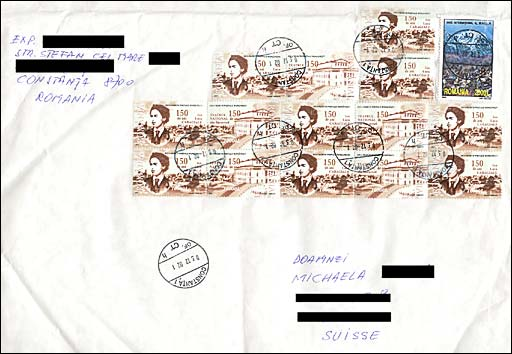

|
|
|
|
INFLATION IN ROMANIA
December 2002
Romania experiences a long and painful inflationary period. Even if in 2002 the inflation of Romanian currency (Leu-Lei) slowed down, it nevertheless continued The results are seen on covers coming from Romania. Please see below four examples, that can be considered typical for the mentioned period.

A letter under 20 grams, format 21.5 x 11 cm, sent from Bucharest to Switzerland on 12/23/02. Total value of stamps: 20,500 Lei. Total number of stamps: 3 (the smallest number). PAR AVION. Cancelled by Bucuresti cartare 6.

A letter under 20 grams, format 16 x 11 cm, sent from Bucharest to Switzerland on 12/12/02. Total value of stamps: 20,500 Lei. Total number of stamps: 4 + one printed on the cover. PAR AVION. Cancelled by Bucuresti cartare 2. Please note that the printed stamps show a pair of classical stamps of Moldova.

From a letter under 100 grams, format 23 x 14 cm, sent from Bucharest to Switzerland on 12/20/02. Total value of stamps: 43,000 Lei. Total number of stamps: 5. PAR AVION, Cancelled by the Office Bucuresti 45 (Brezoianu Street). Please note the number of stamps that have to be used (none of both letters was sent by a stamp collector, a fact that can be easily seen).

I show also a letter that my wife received from Constanta, the second biggest city of Romania. This was a big format cover (34 x 26 cm), with an total weight of about 350 grams. It is franked by no less then 15 stamps, having a total value of 142,000 Lei, or about US$ 4.50. Because it wasn't sent by a stamp collector either, I suppose that the central postal office from Constanta (No. 1) hasn't at that moment stamps of a higher face value (exactly the same situation as in Bucharest, I suppose). Anyway, the total face value and the number of stamps are highly impressive!
I put on the top of this page two images of Romanian humorist and dramatist Ion Luca Caragiale, because should he still be alive, he had surely something to say about all these covers. Just to notice that his most famous play was named "A Lost Letter".
| Published:
12/25/2002. Revised:
12/28/02. Copyright © 2002 by Victor Manta, Switzerland. All rights reserved worldwide. |